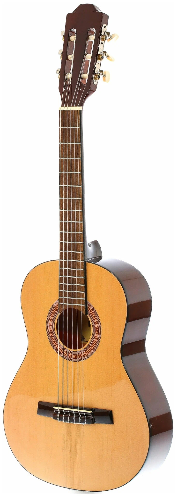
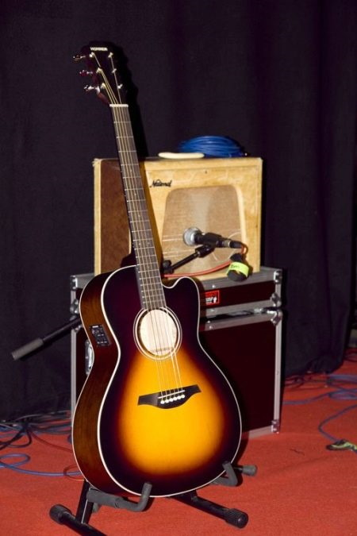
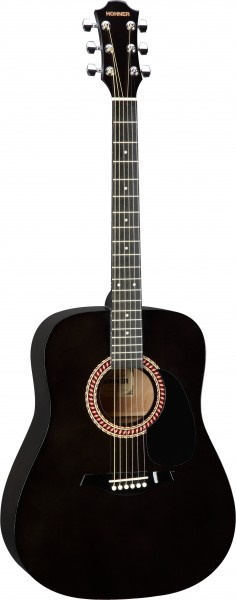

Популярные товары за последнее время
 Hohner HC 06 – универсальная классическая гитара от всемирно известной фирмы. Отличается высоким качеством и надежностью. Изящная форма и корпус из красного дерева обеспечивают сбалансированное, чистое звучание, а гриф из твердых пород древесины и никелевые посеребренные лады делают игру на гитаре легкой и комфортной. Если вы хотите купить Hohner HC 06, обратите внимание на то, что цена на Honher HC 06 у нас ниже, чем в других интернет-магазинах.
Стоимость: 10 000 рублей
 Гитары Essential Roots неразрывно связаны с ролью HOHNER в истории блюза. Именно поэтому для создания этих винтажного вида гитар компания сотрудничала с гитаристами своих артистов-эндорсеров губных гармоник.
Стоимость: 11 599 рублей
 HOHNER HW220 TBK - акустическая гитара - цвет черный, верх - ель, корпус-махагон, гриф из пород твердого дерева, 20 ладов, анкер, открытая механика, никель
Стоимость: 10 999 рублей
Модель HOHNER ER1-S0SBE - это электроакустическая гитара с уменьшенной
мензурой 613 мм, верхней декой из массива Ситхинской ели,
корпусом из махагони и отделкой тонким матовым лаком.
Несмотря на размер, корпус формы L0 спопобен удивить своим "большим"
звуком. Гриф из Восточного махагони имеет 20 ладов и накладку из
палисандра.
Стоимость: 16 999 рублей